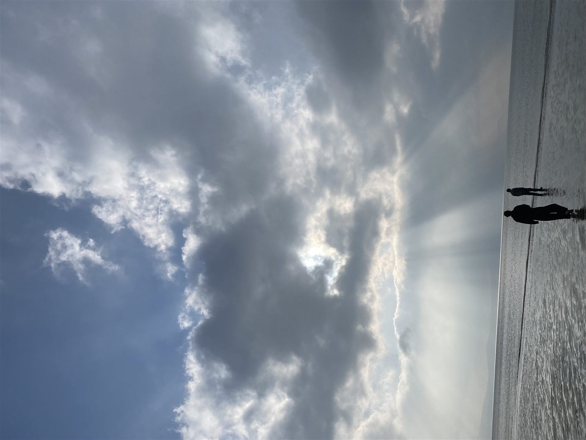
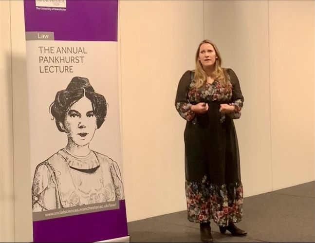

The erosion of Pride and Prejudice life
Was it ever a thing to begin with?
Longer pieces, and writing with more of a personal voice than the news pages allow.
Was it ever a thing to begin with?

Or is it just Metaphysical Angst?

Laura Bates talks about her findings on incels, pickup artists, and harassment.